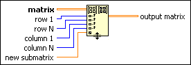

Set Submatrix Function
Owning Palette: Matrix Functions
Requires: Base Development System
Adds a submatrix to matrix starting at (row 1, column 1) and ending at (row N, column N).
Add additional row, column, and new submatrix inputs and output matrix outputs by resizing the node.
The connector pane displays the default data types for this polymorphic function.
Details

 Add to the block diagram Add to the block diagram |
 Find on the palette Find on the palette |
 |
matrix must be a 2D array of any numeric type or a real or complex matrix.
|
 |
row 1 must be an integer or real numeric. row 1 specifies the first row in matrix you want to appear in the output.
The default is 0.
|
|
row N must be an integer or real numeric. row N specifies the last row in matrix you want to appear in the output.
The default is the index of the last row in matrix.
|
|
column 1 must be an integer or real numeric. column 1 specifies the first column in matrix you want to appear in the output.
The default is 0.
|
|
column N must be an integer or real numeric. column N specifies the last column in matrix you want to appear in the output.
The default is the index of the last column in matrix.
|
 |
new submatrix can be a real or complex matrix, a 2D array of any numeric type, or a numeric scalar. If you do not wire an input to new submatrix, the default is 0.
|
 |
output matrix is the matrix with the new submatrix. If matrix is an empty matrix or array, output matrix resizes to receive the new elements.
|
If you wire a 2D array to matrix, output matrix returns an array even if you wire a real or complex matrix to new submatrix.
If you wire an input to matrix and you do not wire the other inputs, output matrix returns matrix with every element set to 0. If you wire a scalar input to new submatrix, every element in output matrix is set to the scalar value.
If you wire an input to matrix and a matrix to new submatrix, output matrix resizes with the new submatrix elements in output matrix. If the function needs to add rows or columns to the new submatrix, the function returns 0 at each exterior location.
Wiring Empty Input Values
If row N is less than row 1 or column N is less than column 1, output matrix returns matrix.
Indexing Outside Input Values
If you wire a negative value to row or column, the function ignores the rows and columns of the submatrix with negative indexes. If new submatrix is a matrix, the function also ignores the new submatrix elements that fill these rows and columns.
If you wire a value to row N or column N that is greater than or equal to the row or column dimension of matrix, matrix resizes to receive the new elements.
Wiring the New Submatrix Input
If you wire a matrix to new submatrix when it has a dimension larger than matrix, matrix resizes to receive the new submatrix elements. If you increase the row or column dimensions of matrix, the function sets the new elements to an invalid operation value at each exterior location.
If you wire a matrix to new submatrix when the dimensions of the row or column inputs are less than the number of rows or columns in the submatrix, the function ignores the additional row and column elements in the new submatrix.
If you wire a matrix to new submatrix when the dimensions of the row or column inputs exceed the number of rows or columns in the submatrix, the function inserts an invalid operation value at each exterior location.
If you wire an input to new submatrix with a different numeric type than matrix, the function converts matrix to a new numeric type if the function cannot set new submatrix elements without losing precision. If the function cannot set new submatrix elements without losing precision, the numeric type of new submatrix converts to the numeric type of matrix.
If you wire a real or complex matrix to matrix, output matrix returns a real or complex matrix. The table of special coercion cases shows the situations when output matrix is different from matrix.